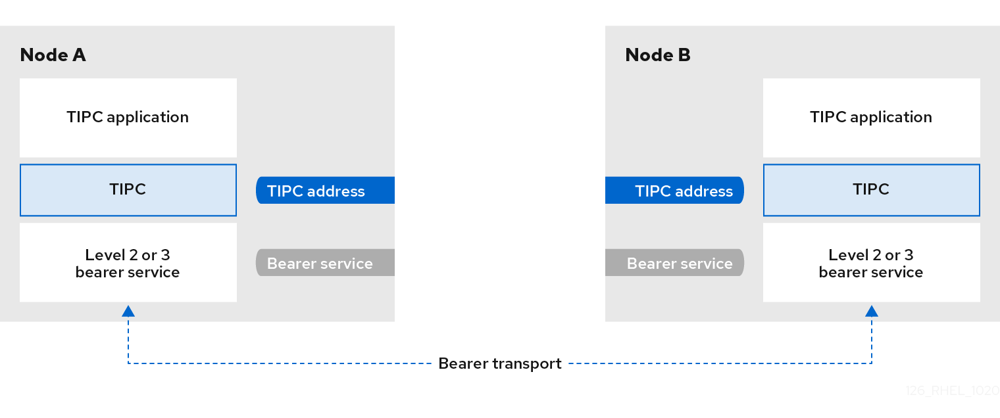

The architecture of TIPC
TIPC is a layer between applications using TIPC and a packet transport service (bearer), and spans the level of transport, network, and signaling link layers. However, TIPC can use a different transport protocol as bearer, so that, for example, a TCP connection can serve as a bearer for a TIPC signaling link.
TIPC supports the following bearers:
-
Ethernet
-
InfiniBand
-
UDP protocol
TIPC provides a reliable transfer of messages between TIPC ports, that are the endpoints of all TIPC communication.
The following is a diagram of the TIPC architecture:
